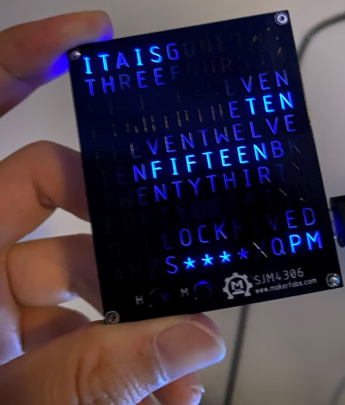
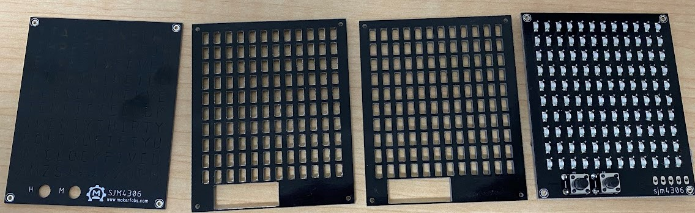
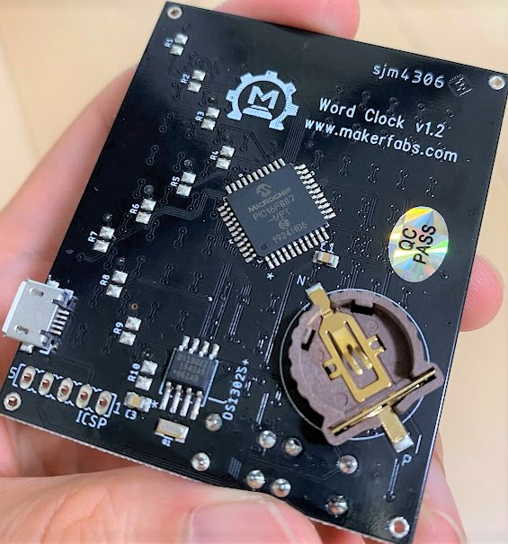
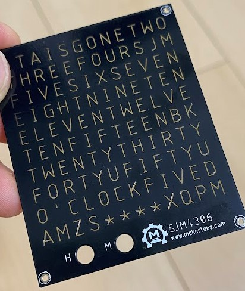
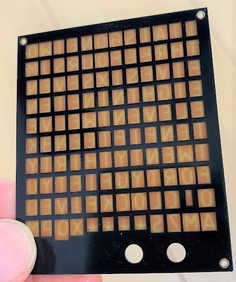

この記事はMakerfabsの提供でお届けします。
今回紹介するSmall Word Clock KitはMakerfabsから提供いただいたものです。
（ですが、Small Word Clock KitはMakerfabsをレビューしたい！と言ったのは自分なので、Makerfabsが無理やりこの商品を押しているわけではなく、inajobの一押しアイテム！、という感じです。）
というか、このガジェットは映画”マトリックス”風の小型でとてもかっこいいWord Clockで紹介していたものです。
何の因果か、今回これを手にすることができ、レビューすることが出来て、とてもうれしいです。
Small Word Clock Kitとは
Word Clockという時計を知っていますか？
グリッド上に一見ランダムに並んだアルファベットが点灯し、そのアルファベットが時刻を表すという、ちょっと変わった種類のデジタル時計です。
このSmall Word Clock KitもそういったWord Clockの一種です。
Kitと書いてあることからもわかるように、組み立て式のキットとなっています。（ほとんどは組み立てられているため、組み立ては非常に簡単です）
動作の様子
この商品はインテリア的なものなので、細かい仕様よりは、見た目が気になる方が多いと思うので、まずは動作の様子を紹介します。
「Small」という名の通り手のひらより一回り小さいサイズです。

この写真は「IT IS」から始まり「TEN」「FIFTTEEN」「＊＊＊」「PM」のような表示となっており、これは午後10時18分を表しています。 小さな文字盤のため、すべての時刻を英単語で表すことができず、5分未満の分については「＊」で表されます。
また、時刻を表示する以外の機能として、それっぽいアニメーションを表示する機能もあります。
素敵なWordClockを手に入れた！
— ina_ani@2歳児のパパ (@ina_ani) August 11, 2022
時計表示以外にもいい感じのアニメーション機能もついてます！https://t.co/wLrEcwYqSO pic.twitter.com/6rRzPSd8P2
ブロック崩しゲームのような動きをするものや、映画マトリックス風の表示のものなど何種類かのアニメーションを選択できます。
組み立てについて
この商品は4枚の板がサンドイッチとなって構成されており、うち2枚は基板、うち2枚はアクリル板をレーザーカットしたものです。

基板上の部品はすべてはんだ付けされており、組み立てる必要はありません。
購入した人が組み立てるのは「これら4枚の板をくっつける」だけです。
くっつけ方は特に文書がないのですが、写真を見る限り基板同士を短い導線ではんだ付けするのがよさそうです。
自分は電子工作で余った抵抗の足を使って組み立てました。
仕様
仕様というか基板上の部品を見てみます
-
PIC16F887
- コアとなるマイコン
-
DS1302S+
- RTC
-
CR1220
- RTC用のバックアップ電池
-
MicroUSB端子
- 電源としてのみ接続
主な部品は以上です。それ以外はRTC用の水晶、おまじないコンデンサ、書き込み用のICSP端子があるくらいです。

基板上には何やら抵抗を配置するフットプリントがありますが、実装されていません
ハードウェアの設計、ソフトウェアはオープンソースになっておりプロジェクトページからダウンロードできます。
標準的な動作に飽きたら自分で好きなようにプログラミングできそうです。
構造
2枚の基板と2枚のアクリル板のサンドイッチ、と書きましたがこの構造は非常に興味深いです。


というのも2枚の基板のうち1枚が、基板を利用したスクリーンとなっているのです。
基板上のソルダーレジストを文字の形にくりぬくことで、そこだけ光が少し漏れるようになっており、後ろから光を当てると、文字が浮かび上がるようになっています。
このようなスクリーンは様々な手法で作ることができますが、基板を利用することで、メイン基板と同じ発注で実現できるので発注を一緒にできてコストが抑えられそうです。
基板をサンドイッチして作るようなガジェットを作る際は、このテクニックでLEDのインジケーターを好きな形にできそうです。
まとめ
面白い見た目のWord Clockを紹介しました。
うまくインテリアとして使うことで、部屋の雰囲気をサイバーな感じに演出できそうです。 またオープンソースハードウェアということで、その動作を書き換えて自分オリジナルの時計に作り替えるという使い方も面白そうです。
値段もお手頃なので、気になる人はぜひ販売ページをチェックしてみてください。


関連記事